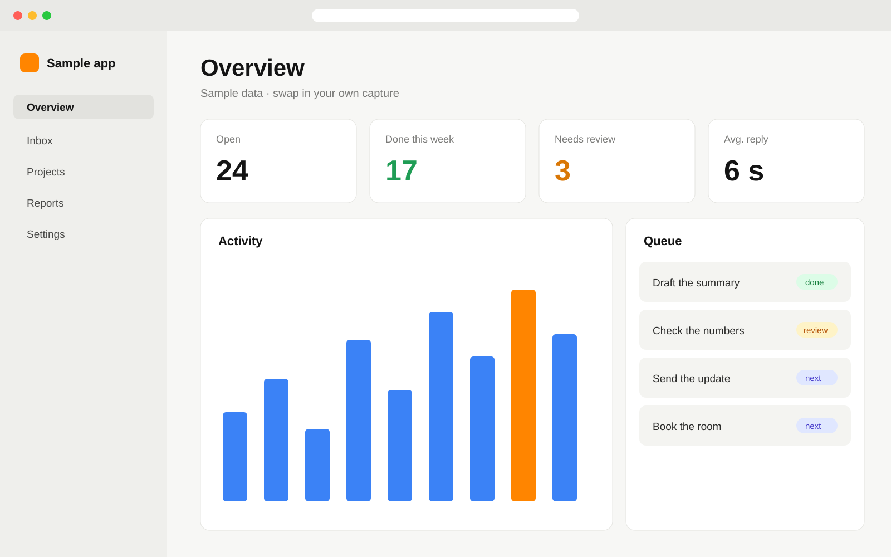

Up next
The demo. Real runs only.
One line on what this part proves.
Where the code isgithub.com/you/repo/tree/main/demo
Builder · Speaker · Your city
The three things you work on, in one line. Then what tonight is about.
 ProgrammeAward name
ProgrammeAward name
One sentence on what it is and why it matters to this room.
Or type thisgithub.com/your-handle/your-repo
 Scan to open the repo
example.com/repo
Scan to open the repo
example.com/repo


Which job in your system is small enough to hand over, and what would the check be?
 Slides and links
example.com/slides
Follow along
example.com/repo
Slides and links
example.com/slides
Follow along
example.com/repo
Thanks for staying for the demo ✓
Grab the slides
example.com/slides